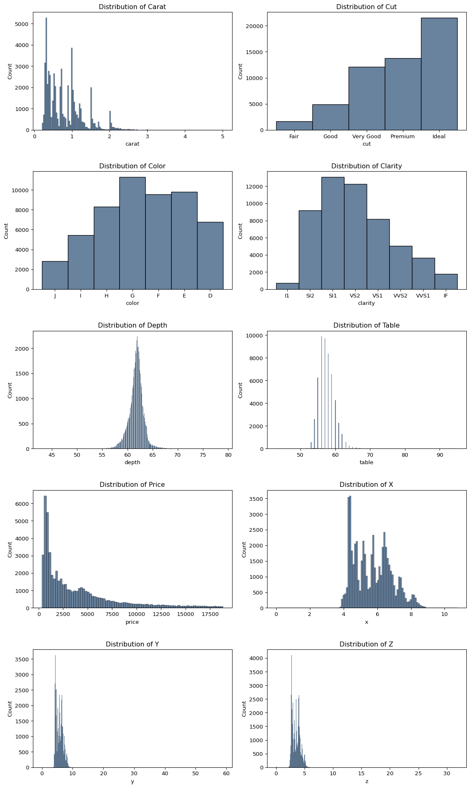
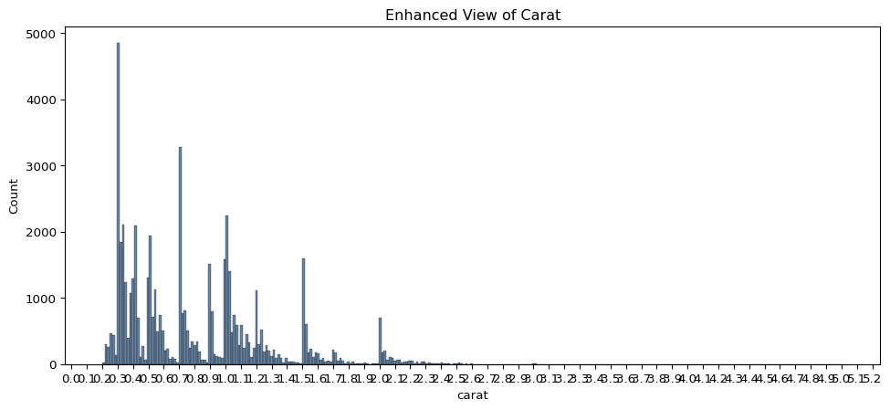
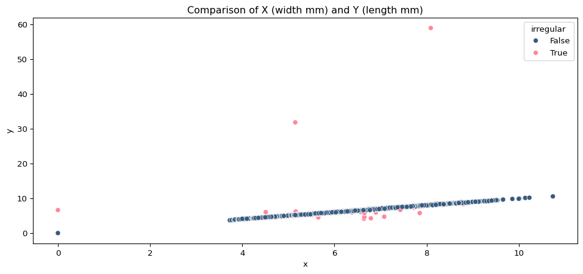
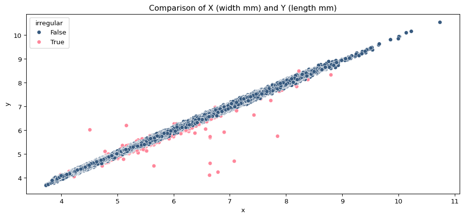
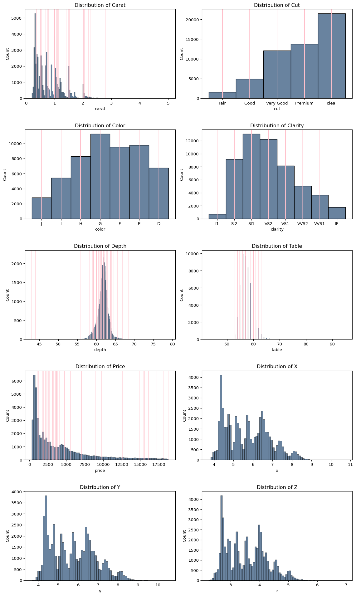
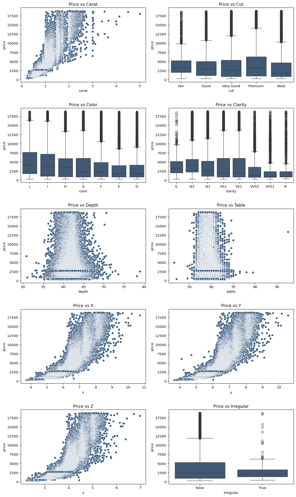

Roughly six months on from completing my MSBA degree, I’m thrilled to have taken on a new role at work, focused specifically on data analytics and engineering. This has provided copious opportunities to exercise and build upon the skills I learned in school, as well as branching out to several new skills.
However, I’ve realized there are handful of concepts from school, mostly in the data science and machine learning realm, that I’m not using day-to-day. I’d like to keep these skills fresh, so I’ve set a goal to complete one small personal project each month that let’s me practice and expand upon them.
Diamond Pricing
For this first project, I decided to search Kaggle for a fairly simple yet large dataset, applicable to predictive modeling. I chose this Diamond Prices dataset from 2022, containing prices and attributes of over 50k diamonds.
Project Goals
Conduct exploratory data analysis to:
Understand the dataset, its features, their structures and relationships
Which features are most likely significant
Determine if any transformations are needed
Begin modeling with OLS, assessing significance of potential features and validity of model assumptions
If appropriate, explore alternative model types and/or further feature transformations
Get more practice with commonly used libraries like scikit-learn and statsmodels as opposed to the proprietary library we typically used in school, pyrsm
As I typically do in the workplace, restrict use of generative AI tools for learning, as opposed to writing any code directly
EDA
Having downloaded and read-in the data, let’s take a look at some basic descriptive outputs.
View Descriptive Outputs
display(df.info())display(df.head())display(df.describe())for col in df.columns:if df[col].dtype =='object': vc = df.value_counts(col).reset_index() vc['percent'] = np.round(vc['count']*100/df.shape[0], 2) display(vc)
Since we clearly have some ordinal categorical variables here, let’s define them as such and sort them properly. It’s been a few years since I’ve been diamond shopping, so I had to look up these clarity and color tiers, as well as the meaning of the table variable which is the ratio of the flat top surface to the total width.
With the categorical variables handled, I’d like to get some quick visual plots to better understand these variables’ distributions.
n_axes = df.shape[1]n_plot_rows =int(np.ceil(n_axes/2))fig, axes = plt.subplots(n_plot_rows, 2, figsize=(12,n_plot_rows*4))axes = axes.flatten()for a, col inenumerate(df.columns): sns.histplot(df[col], ax=axes[a]) axes[a].set_title(f'Distribution of {col.capitalize()}')plt.tight_layout(h_pad=3)plt.show()

Notably, many of the variables demonstrate a roughly normal distribution, including color, clarity, depth, and table. However, both price and carat are strongly right-skewed. Carat exhibits an interesting stepped behavior with higher frequencies just near certain thresholds like 1.0, 1.5, or 2.0 carats. I imagine this is not random but the result of conscious efforts to achieve specific final diamond weights when being cut and finished.
plt.figure(figsize=(12,5))plt.xticks(np.arange(0, 6, 0.1), labels=None)sns.histplot(df.carat, bins=300)plt.title('Enhanced View of Carat')plt.show()

The dimension variables x, y, and z, representing the width, length, and height of the diamonds, appear to warrant further attention. Given that these are measured in mm, values of 30+ seem a bit questionable.
Cleaning
This dataset is described as containing round-cut diamonds, which should have roughly equal width and length. With more than 50k rows, it seems plausible that some irregularly shaped diamonds, like oval or heart, may be included. In order to examine this aspect and help identify potential erroneous data points, I’ll create a new variable, assessing whether the length is +/-3% different than the width. As plotted below, you can see the segregation of two groups, the majority which are roughly equal in dimension and a minority that aren’t.
df['irregular'] = np.abs((df.x - df.y) / df.y) >0.03plt.figure(figsize=(12,5))sns.scatterplot(df, x=df.x, y=df.y, hue='irregular')plt.title('Comparison of X (width mm) and Y (length mm)')plt.show()

Easier to see in this plot than the initial histograms are several clearly erroneous sizes: several widths of 0 and few lengths more than 6x greater than their widths. In total, this amounts to only 10 rows, so I see no issue with simply dropping them.
df['erroneous'] = (df.x ==0) | (df.y >20)erroneous = df.copy().loc[df.erroneous]cleaned = df.copy().loc[~df.erroneous]plt.figure(figsize=(12,5))sns.scatterplot(cleaned, x='x', y='y', hue='irregular')plt.title('Comparison of X (width mm) and Y (length mm)')plt.show()

We now see a much more logical pattern displayed, with most still being regularly shaped and a minority being irregular but plausibly so. Since there have been at least some data quality issues found thus far with x and y, it would be prudent to check the z values.
In theory, these should be well related to the depth ratio variable. However, since that’s the ratio of height to width and some of these diamonds have irregular sizes, I cannot be certain in how the given depth values were produced. E.g. was width considered width, length, or some average of the two? For this reason, I’ll give those irregular diamonds a ‘pass’ here and focus on identifying the other outliers through a comparison of provided depth ratio and manually calculated depth ratio.
With what is again a very small number of erroneous datapoints, more advanced imputation methods are likely not required here. To be on the safe side, I’ll compare the dropped rows to the remaining ones, checking for any patterns across the other variables. What we see below is a fairly even/random distribution, so no significant bias concern from dropping. Moreover, the x, y, and z histograms now appear aligned with each other, as we’d expect.

Feature Engineering
With the data cleaned up, it’s time to check out the relationships between the response, price, and the potential model features.

Analyzing these plots, it would appear the variable with the strongest relationship to price is carat, as well as the dimensional variables x, y, and z, which makes sense given that carat is, after all, a measure of the diamond’s weight. There’s clearly a non-linear relationship between carat and price, which if I want to continue with OLS, I’ll have to resolve through transformation.
The boxplots of cut, color, and clarity all show the opposite of what I would have expected: generally lower median prices as you move along the categories from worst to best. I suspect this is less representative of their true relationships with price and more likely a result of the skewed price and carat distributions. I’ll look forward to seeing the plots of these variables’ independent effects on price later, a standard plotting option baked into pyrsm that I plan on reproducing.
Another notable observation is that there’s slightly more variation in depth, and to a lesser extent, table, at the lower prices than there is at higher prices. This is consistent with what I had read about there being an ideal central range of ratios for these.
Let’s continue on and examine some potential transformations of carat, price, or both.
Of the three, the log-log transformation seems to be the most linear, which stands to reason give that both variables are heavily skewed in the same direction. With so many data points though, I thought the scatterplots may be obscuring some latent pattern still, so I ran a line plots which indeed show that while the relationship is fairly linear up to about 2 carats, somewhere north of there the behavior changes with the line leveling off and becoming more variable. To capture these alternate behaviors at different carat sizes, I’ll create a dummy variable for carat>2 and an interaction term between that and log_carat to pass to the model.
Two final transformations I’ll apply are to the table and depth variables. Since these are both ratios bounded between 0 and 1 with an optimal central range of values, I’ll convert them to an absolute z score instead.
To save a some time and space on the page, I’ll summarize my OLS model trials here and display my final results at the bottom.
Model Trials
#1: As a quick test, I regressed log_price on log_carat. That alone yielded an R^2 of .933 on the training data and 0.932 on the test data. Residuals were normally distributed, however, there was evident heteroskedasticity with greater residual variance at higher predicted prices, as expected from the previous line plots.
#2: Next, I regressed log_price on every available feature. R^2 increased to .983 and the heteroskedasticity was resolved. While all features appeared to be statistically significant to the model with p-values <= .001, a comparison of their independent effect plots and permutation importance scores revealed that ‘table_norm’, ‘depth_norm’, and ‘irregular’ were contributing little-to-nothing.
#3: Preferring a simpler model when possible, I removed the three aforementioned features for the next model trial. R^2 didn’t decrease at all nor did any diagnostic plot materially change. As this model performed so well, I felt no need to trial any tree-based or other models.
Final Model & Outputs
Now, as I mentioned, the pyrsm package has a plotting option to easily generate plots of each feature’s independent effect on the prediction. It also has options to quickly generate common diagnostic plots, correlation plot, variable permutation importance plot, VIF scores, and a summary of feature coefficients and error stats. These were always highly informative, and wanting to replicate them here, I discovered that it in fact takes a combination of functions from sklearn and statsmodels to do so.
Below is my final model and the additional code I wrote to successfully replicate the output summaries and plots.
With the exception of a few outliers, residuals exist within a consistent range across predicted values, they are normally distributed, and aside from the expected case of large & carat:large, there are no evident concerns of multicollinearity. The data, with included transformations, fits the assumptions of an OLS model.
Carat is clearly the dominant predictive feature here. Between analysis of the features’ initial correlation plots with price and their independent effect plots, I would offer the following conclusion:
Most diamonds weigh less than 2 carats. The price of those diamonds is closely related to their weight, with small impacts from clarity, color, and cut. The price of larger diamonds is more variable, less closely related to their weight, and more likely to be impacted by clarity, color, and cut.
Lessons Learned
Overall, I found this to be a great exercise; it was the perfect refresher of basic regression analysis concepts I learned in school. It presented a few challanges and provided the desired opportunity to become more familiar with sci-kit learn and statsmodels.
I’ll note that my work to replicate several aspects of pyrsm gave me a better appreciation for the work that must have gone into developing that package. Another example of this is how pyrsm’s model functions inherently handle encoding of categorical variables. Here, I ended up using ColumnTransformer and OneHotEncoder from sci-kit learn to handle that, which worked perfectly fine, but was certainly an extra step.
I also ended up using FunctionTransformer within ColumnTransformer to handle taking the log of carat and TransformedTargetRegressor to handle taking the log of price. As I started thinking about how I might deploy this model, I realized that having inputs provided and outputs received in their original scale would be more efficient and clean. While learning how to use those functions, I decided that I’d like to learn more about sci-kit learn’s Pipeline function as well. I think I’ll make that a goal for one of my future projects.
Speaking of future projects. I’ve also learned it may be more realistic to set out for completing one project every one-to-two months, rather than every month. That said, I know what I’d like to do next, and that’s deploy this model via a simple Shiny web app where someone could provide information on a diamond and get a predicted fair price range in return. Developing interactive web apps via Shiny or similar tools was another skill I learned in school and look forward to refreshing!